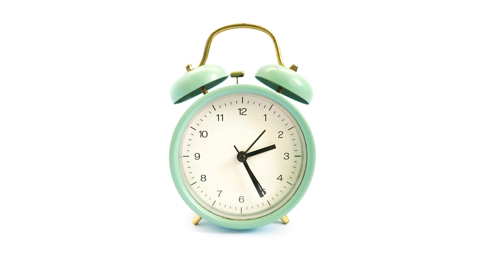

CHILD PSYCHOLOGY ·
Nocturnal Enuresis Treatment
1,000+ children over 23 years. Without a single medication. Therapy only, following international protocols.
1,000+ children over 23 years. Without a single medication. Therapy only, following international protocols.
Accurate diagnosis of PMNE and differentiation from other forms of enuresis — the right starting point for treatment.
The child has never had stable "dry nights" lasting at least 2 weeks. Restricting fluids during this period does not count as a result. During the day, while awake, there is no urinary incontinence. Incontinence occurs only during sleep. The diagnosis is made from age 5 — before this age, the child is only taught rules for night-time self-control.
Methods that do not affect waking — "notes", "herbal infusions", "lumbar massage", acupuncture and other unsubstantiated approaches — have not demonstrated effectiveness in treating PMNE. Nevertheless, many parents try these first; failing to achieve a stable result, they later lose confidence in specialists.
The main reason is the depth of the child's sleep. During deep sleep, the waking signal does not reach sufficient strength to rouse the child — so the reflex (skill) of timely waking does not form. This is a biological trait, not laziness, illness or "bad parenting". There is a hereditary component — if parents sleep deeply, the probability in the child rises to 75%.
ICD-10 F98.0 falls under the section on disorders of psychological development. This means the appropriate specialist is a psychotherapist or clinical psychologist, not a neurologist or urologist.
Neurological (G.) or urological (R.) enuresis is a separate category — in these conditions, incontinence also occurs during the day while awake. PMNE occurs only during sleep. No pathology of other organs is found.
Short answer: NO — it has no place in first-line enuresis therapy.
Some neurologists prescribe imipramine (melipramine) — a tricyclic antidepressant — to children diagnosed with ICD-10 F98.0. This drug produces a temporary effect of urinary retention, but does not form the mechanism of enuresis — the waking reflex. After discontinuation, enuresis returns in approximately 60% of cases (relapse).
The FDA (US Food and Drug Administration) has issued a Black Box Warning for imipramine — risk of suicide in children and adolescents. The drug also has cardiotoxic effects. Medical literature describes cases of children dying from cardiac arrest while taking imipramine for enuresis treatment.
The use of imipramine for enuresis began in the 1960s. Since then, international medical organisations (WHO, ICCS, NICE, EAU/ESPU, AUA, ICS) have updated their protocols — imipramine has been removed from first-line therapy. Yet some specialists do not follow these updates.
The psychotherapist must rule out secondary enuresis — as a consequence of another condition. This is not PMNE.
Once organic causes are excluded, the diagnosis of PMNE is confirmed and treatment begins. Referral to the appropriate specialist is made on the recommendation of the psychotherapist.
We hide nothing. Methodology, results and even educational materials — everything is open.
The protocol we use is recommended by WHO, ICCS, NICE, EAU/ESPU. We do not use psychotropic drugs. We rely only on evidence-based methods — references are provided at the bottom of the page.
We publish protocols and materials openly. We want parents to see everything clearly before consulting a specialist.
Treatment for children of martyrs, veterans and war participants, as well as confirmed low-income or disabled families, is completely free. In 2025 alone, more than 250 children were treated — over 100 of them entirely free of charge.
Our Instagram page has dedicated highlight sections — URINARY INCONTINENCE and ENURESIS. Wrong treatment methods, signs, parental questions, real case reviews. Watch and share — this information must be free.
Step-by-step treatment scheme according to the international protocol (ICCS 2020, NICE, EAU/ESPU 2019).
A sensor in the underwear or bedding → at the first drops of urine the alarm sounds → the child wakes with difficulty → the parent immediately wakes them per instructions → goes to the toilet → the waking reflex is formed. Effectiveness: 80% sustained result. Course: 8–12 weeks. Relapse rate significantly lower. Active parental involvement is mandatory.
ICCS 2020 · NICE · Cochrane 2005 — method of choiceRemove nappies (they block reflex formation) · Dry/wet night diary · Supportive exercises for the pelvic floor muscles and each stage of the urinary tract in line with treatment progress · Daily strengthening of sensitivity and voluntary control · Shaming is strictly prohibited (proven to worsen prognosis, Cochrane Review 2005).
Increases effectiveness when combined with alarm therapyMotivational exercises are mandatory — the child must have their own desire, otherwise all tasks will be carried out without enthusiasm or may be refused altogether. Therefore 5–8 years is the most effective period. If the child has experienced trauma relating to this issue, trust is weakened and sabotage may occur at waking. Depending on treatment progress, the specialist applies different motivational measures at each stage.
Increases effectiveness when combined with alarm therapyIf behavioural therapy has not produced results after 12 weeks, the next stage involves bidirectional treatment — taking sleep depth into account; in exceptional cases and only under strict cardiological monitoring, psychotropic drugs may be considered. Where an endocrinological investigation has confirmed excess fluid volume, desmopressin or its analogues may be prescribed (Vande Walle et al., 2012).
! Imipramine and Amitriptyline — not recommended by WHO since 2012 due to cardiotoxicity, documented fatalities and numerous side effectsThe treatment course is 500 AZN for three months; if continuation is needed, an additional 100 AZN. Instalments via BirBank for up to 18 months are available.
Causes, the alarm method and practical steps for parents
 Article · 8 min readChild Wetting the Bed — 5 Common Misconceptions›
Article · 8 min readChild Wetting the Bed — 5 Common Misconceptions› Article · 9 min readPMNE — Primary Monosymptomatic Nocturnal Enuresis: Complete Guide›
Article · 9 min readPMNE — Primary Monosymptomatic Nocturnal Enuresis: Complete Guide›
Article · 7 min readHow Does an Alarm Device Work? — International Protocol›Reviews are published only after confirmation by the administrator — no spam or third-party advertising.
"My son was 9 years old and had been suffering for 4 years. He was completely cured in 10 weeks. The device works, the doctor explains everything. I would not have believed it was possible without medication. But I saw it with my own eyes."
"We went to psychiatrists — every one of them prescribed drugs. Kenan bey gave not a single medication — only the device and the methodology. In 3 months the child stopped completely. Simply — thank you."
"We treated online. We did not travel to Baku. We sent weekly reports and received an answer to every question. Our daughter recovered in 8 weeks. Very happy."
"We are a low-income family — they helped us free of charge and quickly. It reminded me what humanity means. The child recovered in 11 weeks. Enormous gratitude."
Reviews are published only after administrator verification. Spam, advertising and unverified information will not be accepted.
Articles by Dr. Kenan Ragimov on the topic of enuresis.